Nirvana2D Editor API
The Nirvana2D editor lets you build 2D levels visually. This API lets you load those levels and access their objects from RCBasic code.
Note
The Nirvana2D API uses custom Types (structs). Include the Nirvana2D header in your project to access them.
Nirvana2D Sprite Editor
The sprite editor allows you to edit sprite definitions used to create sprites in the stage editor. A definition can have animations and the collider shapes uses in physics simulations.
At the far left of the screen there are 2 buttons:
- Load Sprite - Loads a sprite sheet into the definition list. NOTE: This will also load any existing animation and collision data for the sheet as well.
- Delete Sprite - Removes a sprite definition from the editor. NOTE: This will remove any sprites in the stage that use this definition.
At the top of the Sprite Editor is a text field labeled "Sprite ID" where you can change the name of the Sprite. To the right of the Sprite ID field, the dimensions of the sprite frame are shown.
Animation Editor
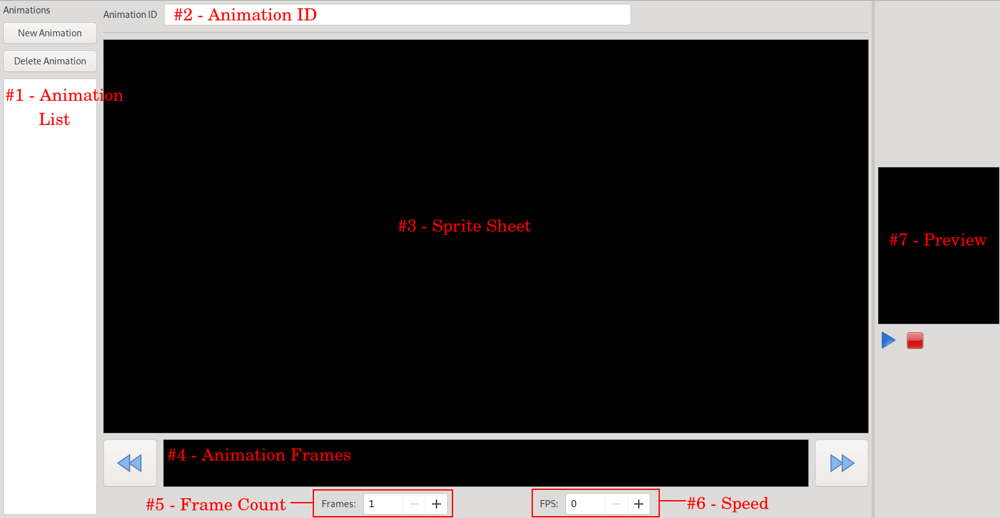
#1 - Animation List - This is the list of animations for the selected Sprite. Above the list are buttons for adding an animation and removing the selected animation.
#2 - Animation ID - This is the name of the current selected animation. You can change it from this field.
#3 - Sprite Sheet - This is where you can view the current sprite sheet and select a sheet frame to set as the currently selected animation frame in the Animation Frames Panel (#4).
- Movement - With the mouse hovered over the Sprite Sheet, you can use W/A/S/D to move around the sheet
#4 - Animation Frames - A horizontal layout of each frame in the animation.
- Setting a frame - To set a frame, first select the animation frame on the frame panel then select the desired frame on the sprite sheet Long Animations - If the number of frames in the animation exceed the viewable frames on the frame panel, use the buttons to the left and right of the panel to scroll the panel
#5 - Frame Count - Sets the number of frames in the current animation
#6 - Speed - Sets the number of frames per second the animation plays at
#7 - Preview - Plays the selected animation.
Shape Editor
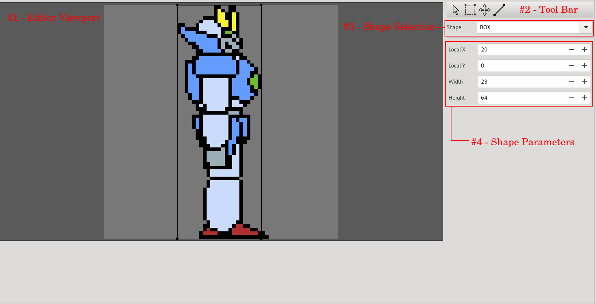
#1 - Editor Viewport - Here you can draw a polygon shape or move and resize box and circle shapes.
#2 - Tool Bar - Tools for editing the shape.
- Select - Selects a single point NOTE: Hold Ctrl to keep previous points selected
- Box Select - Selects multiple points
- Select - Selects a single point NOTE: Hold Ctrl to keep previous points selected
- Move - Moves the selected points Draw Polygon - When polygon shape is selected, this allows you to draw points
#3 - Shape Selection - Select the shape type
#4 - Shape Parameters - Change Parameters for the shape
- NOTE: Parameters are different depending on shape type
Nirvana2D Tile Editor
The Tile editor allows you to edit tile sets used to create tile maps in the stage editor. A tile set can have animations and tile mask which are ways of flaging tiles.
At the far left of the screen there are 2 buttons:
Load Tileset - Loads a tile sheet into the tile set list. NOTE: This will also load any existing animation and mask data for the sheet as well.
Delete Tileset - Removes a tile set from the editor. NOTE: This will remove any layer in the stage that uses this tile set.
At the top of the Tile Editor is a text field labeled "Tileset ID" where you can change the name of the Tileset. To the right of the Tileset ID field, the dimensions of the tile selected.
Animation Editor
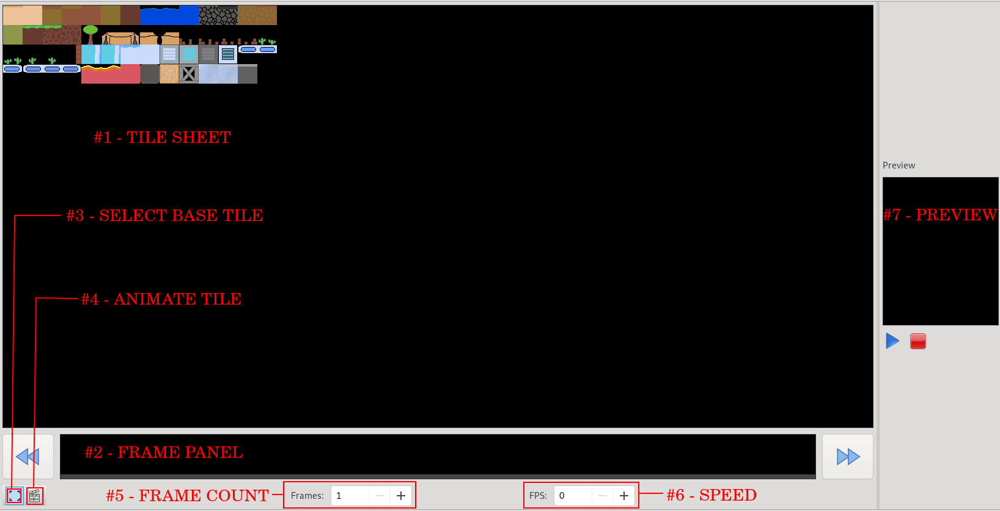
#1 - Tile Sheet - View and select tiles
- Movement - With the mouse hovered over the Sprite Sheet, you can use W/A/S/D to move around the sheet
#2 - Frame Panel - Select the animation frame to set
- NOTE: Must be in animate mode to change a frame from the tile sheet. Otherwise selecting a tile on the tile sheet will change the base tile to animate.
#3 - Select Base Tile - Switches to Base Tile Select Mode
#4 - Animate Tile - Switches to Animate Mode
#5 - Frame Count - Sets the number of frames in the base tile animation
#6 - Speed - Sets the frames per second the base tile animation plays at
#7 - Preview - Play the sprite animation
Mask Editor
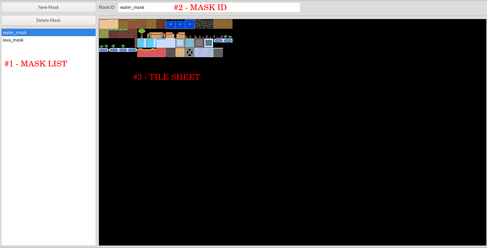
#1 - Mask List - Select a mask to edit
- New Mask - Create a new mask in the current tile set Delete Mask - Delete the selected mask
#2 - Mask ID - Change the mask ID from this field
#3 - Tile Sheet - View and select tiles
- Movement - With the mouse hovered over the Sprite Sheet, you can use W/A/S/D to move around the sheet Flag Tile - To flag a tile in the mask, left click the tile. To unflag a tile, Right Click on it.
Nirvana2D Stage Editor
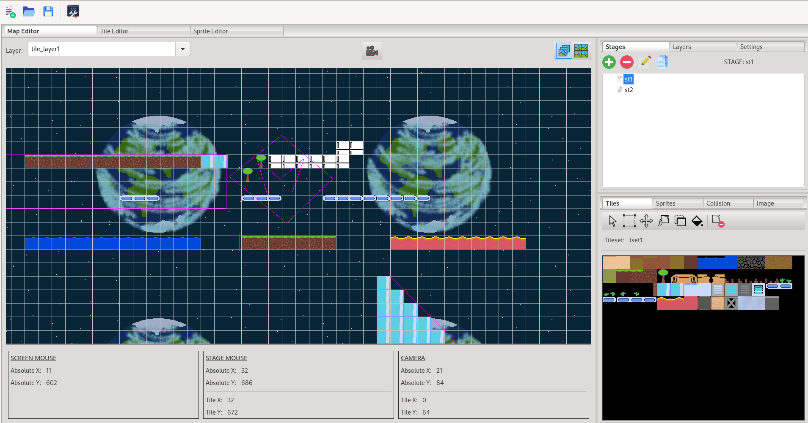
The stage editor is where tiles, sprites, and background layers are brought together to form the stages that you load into your game.
The Viewport
The main part of the stage editor you will interact with is the viewport.
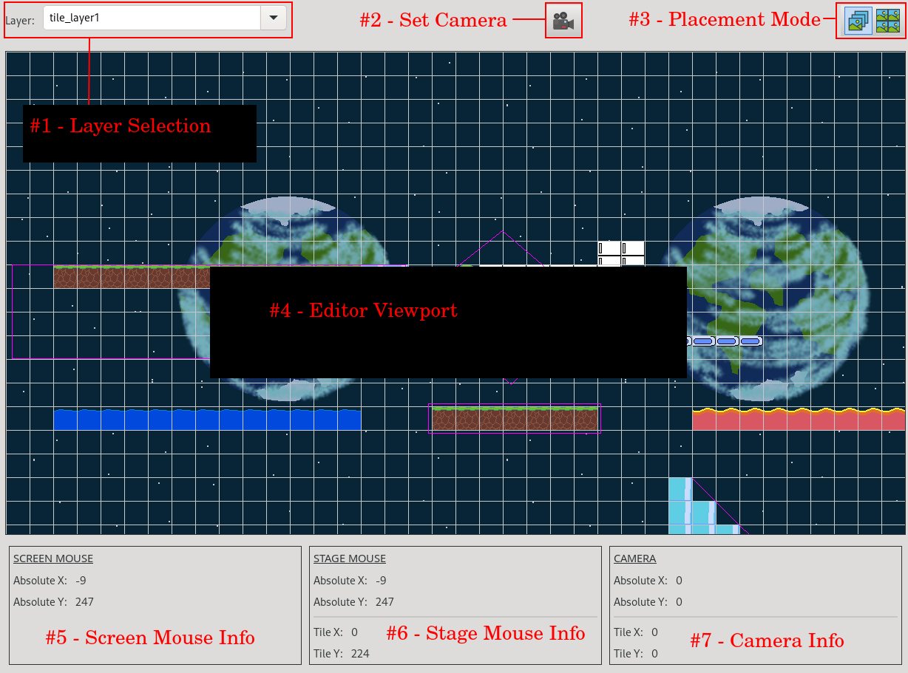
#1 - Layer Selection - Select the active layer
- The active layer type will determine which tools are usable Tile Layers are the only layers where the tile info in #6 and #7 are shown Sprites and Collision shapes are only able to be added or edited on a Sprite Layer If the grid is shown, it will be aligned with the active layer.
#2 - Set Camera - You can use this to move instantly to a desired position in the stage
#3 - Placement Mode - The left button is for free placement and the second button is for grid snapping
#4 - Editor Viewport - This is where a majority of editing is done
- Movement - While the mouse is hovered over the viewport, use W/A/S/D to navigate. The speed of this movement can be changed from settings. If a select tool (ie. tile select, sprite select, or shape select) is active, you can hold Ctrl to select multiple items Multiple selections can also be made by holding Ctrl with Box select
#5 - Screen Mouse Info - The position of the mouse on the screen
#6 - Stage Mouse Info - The position of the mouse in the stage
- The Tile Positions are the top left corner of the tile the mouse is located in
#7 - Camera Info - The position of the camera in the stage
- The Tile Positions are the top left corner of the tile at the top left corner of the screen
Stage Manager
This is where you create stages and manage stage properties
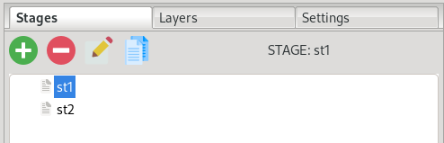
- <- Create new Stage
- <- Delete highlighted stage
- <- Edit the properties for a stage
- <- Copy a stage
Layer Settings
This is where you create layers and edit layer settings
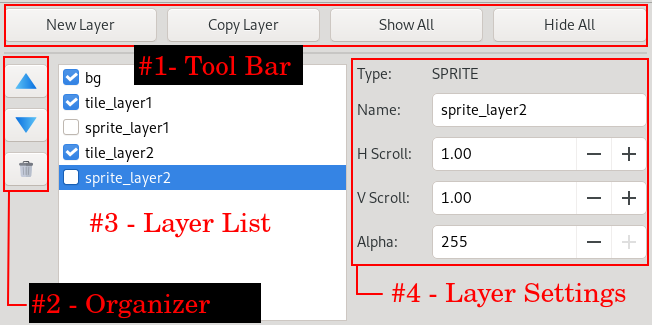
RC BASIC Manual
- New Layer - Create a new layer
- Copy Layer - Copies a layer
- Show All - Makes all layers visible
- Hide All - Hides all layers
#2 - Organizer - Change the order of layers or delete layers
#3 - Layer List - Select a layer in the list to edit its properties and toggle the check box to view/hide individual layer
#4 - Layer Settings
- Type - The type of layer selected. There are 5 types of layers: sprite, tile, isometric tile, canvas 2d, and canvas 3d.
- Name - The name of the layer
- HScroll - The speed the layer scrolls horizontally
- VScrol - The speed the layer scrolls vertically
- Alpha - The transparency value
#5 - Sprite Layers have extra settings that can be changed.
- Sprite Grid - Grid type can be either SQUARE or ISOMETRIC and determines how sprites move and snap when snap tile movement is enabled.
- Sort By - This setting will override SpriteZ values and determines the priority sprites are rendered in
- Order - This determines whether the priority set by Sort By is in ascending or descending order
- Shape Data - You can use this to have the editor generate the shapes when generating code or just export the shape data so you can handle collision yourself
Editor Settings
This is where you can change editor settings
#1 - Viewport
- Show Shapes - This determines whether stage collision shapes are viewable when the layer they are created on is not active
- Show Grid - Show the tile grid NOTE: Tile grid is aligned to the active layer so layers with different HScroll and VScroll speeds will have different grid alignments
- Grid Color - The color of the grid
#2 - Camera
- Move Speed - The speed the viewport scrolls at when using W/A/S/D movement
Tile Map Tools
These tools are only usable when a tile layer is selected.
NOTE: There is a subset of these tools available on sprite layers. The sprite layer tools will create a sprite with the selected tiles.
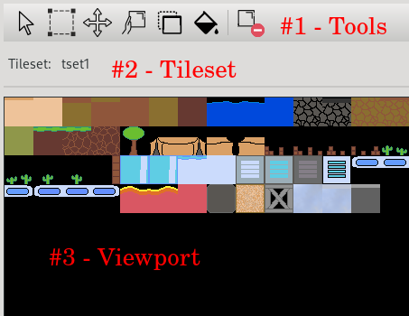
#1 - Tools
- Select - Select a single tile Hold Ctrl to do multiple selections.
- Box Select - Select all tiles in box Hold Ctrl to do multiple selections.
- Move - Move the selected tiles
- Set Tile - Place selected tiles in stage You can select multiple tiles in the tile select viewport Right click to delete the tile at the mouse position in stage viewport
- Copy Tile - Copies the selected tiles
- Fill Tile - Flood fills with a selected tile
- Delete Selected Tiles - Delete selected tiles
#2 - Tileset - Shows the tileset for the current layer
#3 - Viewport - Tileset Selection
Sprite Tools
These tools are only usable when a sprite layer is selected.
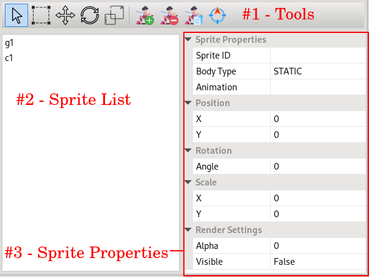
#1 - Sprite Tools
- Select - Select a single sprite Hold Ctrl to do multiple selections.
- Box Select - Select all tiles in box Hold Ctrl to do multiple selections.
- Move - Move the selected sprites If Placement mode is set to Tile Snap then the sprite will snap to the closest tile position.
- Rotate - Rotates the selected sprites
- Scale - Scale the selected sprites
- New Sprite - Add a sprite to the current layer
- Delete Sprite - Delete the selected sprite
- Copy Sprite - Copy the selected sprite Center on sprite - Center the viewport on the selected sprite.
#2 - Sprite List - Select a sprite
#3 - Sprite Properties
- Sprite ID - Name of the selected sprite
- Body Type - Type of physics body
- Animation - The default animation set on the sprite when stage first loads
- Position - The position of the sprite
- Rotation - The angle the sprite is rotated by
- Scale - The scale of the sprite
- Render Settings - Additional render settings
Collision Shape Tools
These tools are only usable when a sprite layer is selected.
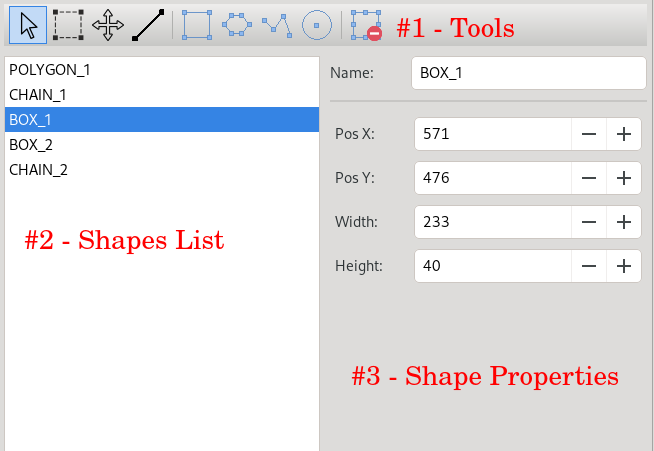
#1 - Shape Tools
- Select - Select a single point Hold Ctrl to do multiple selections NOTE: While Ctrl is down, only points on the selected shape will be selected
- Box Select - Select all points in box Hold Ctrl to do multiple selections NOTE: While Ctrl is down, only points on the selected shape will be selected
- Move - Move the selected points If Placement mode is set to Tile Snap then the points will snap to the closest tile position.
- Draw Shape - Draw the shape in the stage viewport Create Shapes.
- Box - An axis aligned rectangle
- Polygon - A closed polygon
- Chain - A shape made of connected points
- Circle - A circle
- Delete Shape - Deletes the selected shape
#2 - Shape List - List of shapes in the current layer
#3 - Shape Properties - Different properties are available for different shapes
Background Image
A background image can only be set for a Canvas 2D layer.
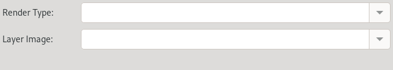
#1 - Render Type - Determines how the image will be drawn
- Normal - Draw the image at its native resolution
- Stretched - Stretch the image to the size of the viewport
- Tiled - Tile the image as the stage scrolls NOTE: Background tile will scroll at layer scroll speed
#2 - Layer Image - The image to draw on the layer
Overview
| Item | Kind | Description / Members |
|---|---|---|
| Nirvana_Vector2D | Type | Dim X Dim Y |
| Nirvana_Size2D | Type | Dim Width Dim Height |
| Nirvana_Sprite | Type | Dim Name$ Dim BaseName$ Dim Sprite_ID Dim Animation_Name_Index Dim Animation_Count |
| Nirvana_TileMap | Type | Dim TilesetName$ Dim Tileset_ID Dim TileMap_ID Dim Mask_Index Dim Mask_Count |
| Nirvana_Background | Type | Dim Image_ID Dim RenderSetting |
| Nirvana_Shape | Type | Dim Sprite_ID Dim ShapeType |
| Nirvana_Layer | Type | Dim Name$ Dim LayerType Dim Visible Dim Alpha Dim Scroll_Speed As Nirvana_Vector2D Dim Ref_Canvas Dim Layer_TileMap As Nirvana_TileMap Dim Layer_Sprite_Count Dim Layer_Shape_Count Dim Bkg As Nirvana_Background |
| Nirvana_Stage | Type | Dim Active Dim Name$ Dim Tile_Size As Nirvana_Size2D Dim Stage_Size As Nirvana_Size2D Dim Layer_Count Dim Viewport_Size As Nirvana_Size2D Dim Stage_Offset As Nirvana_Vector2D |
| Nirvana_CreateVector2D(x, y) | Function | Create a 2D Vector. Returns Nirvana_Vector2D |
| Nirvana_CreateSize2D(w, h) | Function | Create a 2D Size. Returns Nirvana_Size2D |
| Nirvana_CreateSprite(spriteDefinition_name$, sprite_name$) | Function | Create a Nirvana Sprite. spriteDefinition_name$ is the name of the base sprite created in the Sprite Editor. Returns Nirvana_Sprite |
| Nirvana_CreateTileMap(tset_name$, tmap_width, tmap_height) | Function | Create a Nirvana TileMap. Returns Nirvana_TileMap |
| Nirvana_LoadStage(stage_name$, viewport_x, viewport_y, viewport_w, viewport_h) | Function | Loads a stage and sets the part of the window to render it to. |
| Nirvana_Update() | Sub | Must be used in place of Update() when using Nirvana2D. |
| Nirvana_GetLayerIndex(layer_name$) | Function | Returns the internal nirvana index of the given layer name, or -1 if not found. |
| Nirvana_GetLayerCanvasID(layer_index) | Function | Returns the RCBasic canvas ID of the given nirvana layer index, or -1 if invalid. |
Stages
| Function / Sub | Kind | Description |
|---|---|---|
| Nirvana_LoadStage(stage_name$, viewport_x, viewport_y, viewport_w, viewport_h) | Function | Loads a stage and sets the part of the window to render it to. |
| Nirvana_SetStageViewport(v_position As Nirvana_Vector2D, v_size As Nirvana_Size2D) | Sub | Sets the current viewport position and size. |
| Nirvana_GetViewportPosition() | Function | Returns the current viewport position. Returns Nirvana_Vector2D |
| Nirvana_GetViewportSize() | Function | Returns the current viewport size. Returns Nirvana_Size2D |
| Nirvana_SetStageOffset(offset As Nirvana_Vector2D) | Sub | Sets the camera position. |
| Nirvana_GetStageOffset() | Function | Returns the camera position. Returns Nirvana_Vector2D |
| Nirvana_Update() | Sub | Must be used in place of Update() when using Nirvana2D. |
Layers
| Function | Description |
|---|---|
| Nirvana_GetLayerIndex(layer_name$) | Returns the internal Nirvana index for the given layer name, or -1 if not found. |
| Nirvana_GetLayerCanvasID(layer_index) | Returns the RCBasic canvas ID of the given layer index, or -1 if invalid. |
| Nirvana_GetLayerType(layer_index) | Returns the layer type or -1 if invalid. Possible types: NIRVANA_LAYER_TYPE_TILEMAP NIRVANA_LAYER_TYPE_SPRITE NIRVANA_LAYER_TYPE_CANVAS_2D NIRVANA_LAYER_TYPE_CANVAS_3D |
| Nirvana_GetLayerName$(layer_index) | Returns the name of the given layer, or an empty string if invalid. |
| Nirvana_GetLayerAlpha(layer_index) | Returns the layer alpha value set in the layer settings in Nirvana. |
| Nirvana_GetLayerScrollSpeed(layer_index) | Returns the HScroll and VScroll speed. Returns Nirvana_Vector2D |
Sprite
| Function | Description |
|---|---|
| Nirvana_CreateSprite(spriteDefinition_name$, sprite_name$) | Create a Nirvana Sprite. spriteDefinition_name$ is the name of the base sprite in the Sprite Editor. Returns Nirvana_Sprite |
| Nirvana_GetLayerSpriteCount(layer_index) | Returns the number of sprites in a layer. |
| Nirvana_GetLayerSpriteIndex(layer_index, sprite_name$) | Returns the Nirvana sprite index of the given sprite name in the given layer, or -1 if not found. |
| Nirvana_GetLayerShapeCount(layer_index) | Returns the number of stage collision shapes in the given layer. |
| Nirvana_GetSpriteID(sprite_index) | Returns the RCBasic sprite ID of the given Nirvana sprite index, or -1 if invalid. If the sprite is detached, returns the render sprite ID. |
| Nirvana_GetSpriteName$(sprite_index) | Returns the sprite name, or an empty string if invalid. |
| Nirvana_GetSpriteDefinitionName$(sprite_index) | Returns the sprite definition name (the base sprite name from the Sprite Editor). |
| Nirvana_GetSpriteIsDetached(sprite_index) | Returns true if the sprite has a detached render body and dynamics body. |
| Nirvana_GetDetachedSpriteID(sprite_index) | Returns the sprite dynamics body ID. Use this ID for physics operations. |
| Nirvana_GetSpriteAnimationCount(sprite_index) | Returns the number of animations for the given Nirvana sprite index. |
| Nirvana_GetSpriteAnimationName$(sprite_index, animation_num) | Returns the name of the given animation. |
Tile
| Function | Description |
|---|---|
| Tile Map | |
| Nirvana_CreateTileMap(tset_name$, tmap_width, tmap_height) | Create a Nirvana TileMap. Returns Nirvana_TileMap |
| Tile Layer Properties | |
| Nirvana_GetLayerTileSetName$(layer_index) | Returns the name of the tileset associated with the given layer, or empty string if invalid. |
| Nirvana_GetLayerTileSetID(layer_index) | Returns the RCBasic tileset ID for the given Nirvana layer, or -1 if invalid. |
| Nirvana_GetLayerTileMapID(layer_index) | Returns the RCBasic tile map ID for the given layer, or -1 if invalid. |
| Tile Mask | |
| Nirvana_GetLayerTileMaskCount(layer_index) | Returns the number of tile masks on a layer's tileset. |
| Nirvana_GetLayerTileMaskIndex(layer_index, mask_num) | Returns the Nirvana tile mask index for the given mask number, or -1 if invalid. mask_num: 0 to Nirvana_GetLayerTileMaskCount(layer_index)-1 |
| Nirvana_GetTileMaskName$(mask_index) | Returns the name of the given tile mask, or empty string if invalid. |
| Nirvana_GetTileMaskMatrix(mask_index) | Returns the RCBasic matrix ID of the given mask, or -1 if invalid. |
| Nirvana_GetLayerMaskHit(layer_index, mask_index, x, y) | Returns TRUE if the tile at the given world position is flagged in the given mask. (x, y) is a world position, not a row/column position. |
| Set / Get Tiles | |
| Nirvana_GetTile(layer_index, x, y) | Returns the tile index at the given map position. (x, y) is a row/column position, not a world position. |
| Nirvana_GetTileMapPosition(layer_index, stage_x, stage_y) | Returns the row/column position of the tile at the given world position. Returns Nirvana_Vector2D (x, y) is a world position. |
Background
| Function / Sub | Kind | Description |
|---|---|---|
| Nirvana_GetLayerBackgroundImageID(layer_index) | Function | Returns the RCBasic image ID of the image on the given layer, or -1 if no image is set. |
| Nirvana_SetLayerBackgroundImage(layer_index, image_id) | Sub | Sets a new image on the given layer. Layer must be a Canvas2D layer. |
| Nirvana_GetLayerBackgroundRenderType(layer_index) | Function | Returns the render type of the layer image. Possible types: NIRVANA_IMG_RENDER_SETTING_NORMAL NIRVANA_IMG_RENDER_SETTING_STRETCHED NIRVANA_IMG_RENDER_SETTING_TILED |
| Nirvana_SetLayerBackgroundRenderType(layer_index, render_type) | Sub | Sets the render type of the layer image. Layer must be a Canvas2D layer. Possible types: NIRVANA_IMG_RENDER_SETTING_NORMAL NIRVANA_IMG_RENDER_SETTING_STRETCHED NIRVANA_IMG_RENDER_SETTING_TILED |
Types
| Type | Members |
|---|---|
| Nirvana_Vector2D | Dim X Dim Y |
| Nirvana_Size2D | Dim Width Dim Height |
| Nirvana_Sprite | Dim Name$ Dim BaseName$ Dim Sprite_ID Dim Animation_Name_Index Dim Animation_Count |
| Nirvana_TileMap | Dim TilesetName$ Dim Tileset_ID Dim TileMap_ID Dim Mask_Index Dim Mask_Count |
| Nirvana_Background | Dim Image_ID Dim RenderSetting |
| Nirvana_Shape | Dim Sprite_ID Dim ShapeType |
| Nirvana_Layer | Dim Name$ Dim LayerType Dim Visible Dim Alpha Dim Scroll_Speed As Nirvana_Vector2D Dim Ref_Canvas Dim Layer_TileMap As Nirvana_TileMap Dim Layer_Sprite_Count Dim Layer_Shape_Count Dim Bkg As Nirvana_Background |
| Nirvana_Stage | Dim Active Dim Name$ Dim Tile_Size As Nirvana_Size2D Dim Stage_Size As Nirvana_Size2D Dim Layer_Count Dim Viewport_Size As Nirvana_Size2D Dim Stage_Offset As Nirvana_Vector2D |